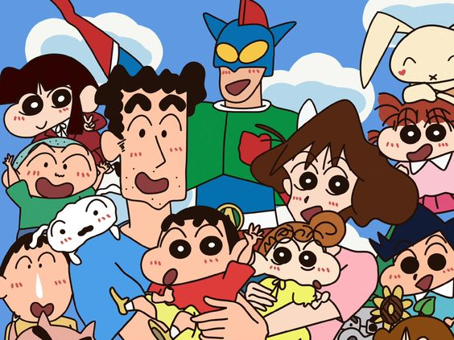
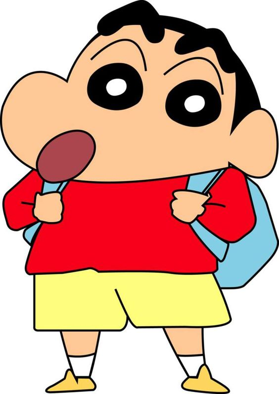
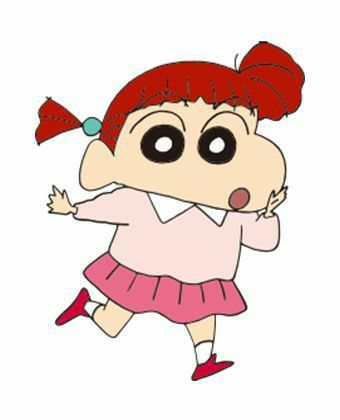
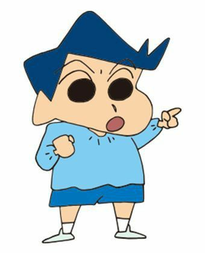
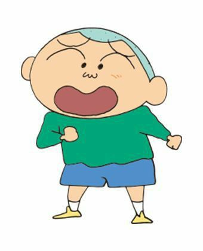
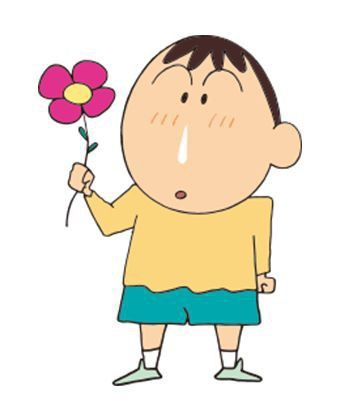
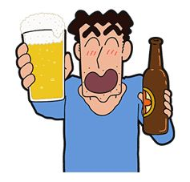
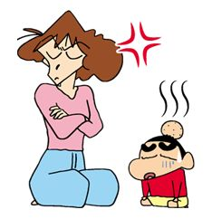
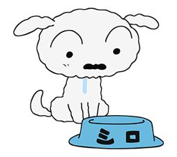

font-family: 'Caprasimo', cursive;
font-family: 'Caveat', cursive;
font-family: 'Cormorant Upright', serif;
font-family: 'Gasoek One', sans-serif;
font-family: 'Playfair', serif;
font-family: 'Satisfy', cursive;
CHARACTERS

Shinnosuke Nohara

Shinnosuke Nohara (野原しんのすけ), also known as Shin-chan or just Shin, is the titular main protagonist of Crayon Shin-chan. He is the son of Hiroshi and Misae. His nickname is "Shin-chan" Nohara and he is Himawari's brother, a kindergarten-aged boy whose antics are the basis for the series.He is 5 years old and yet acts overly mature. In general,he is brutally honest, highly curious, and has no shame whatsoever.His affectionate name by relatives is Shin-chan. He loves chocolate biscuits of the brand "Chocobi" and a TV superhero named "Action Mask", but he dislikes green peppers. He inherited more genes from his mother than his father. He is lethargic, loves to eat and sleep, stingy, stubborn (a trait that passed down from his maternal grandfather to his two aunts and mother and his mother passed down to him), imagining things, cannot resist good things, opinionated and brazen which is just like his mother while the only thing same with his father is likes to watch and flirt pretty young ladies and his eyebrows. Both Shin-chan and his sister's appearance look more like their mother. He always takes care of his sister, Himawari. Sometimes he changes the actual words, making it very funny.
Nene Sakurada

Nene Sakurada (Neni) (桜田ネネ) (5 years old).She loves to play "real omamagoto" ("real house") in which divorces and arguments are very common and she typically forces/blackmails the boys to play with her. She insists on being the mom all the time-and she forces her friends to do stuff they don't really want to do. This is always a nuisance to Shin-chan,Bo-chan, and Kazama-kun and a nightmare to Masao as he often needs to be Nene's husband (as an unsuccessful salaryman) in the plot. She occasionally sees her mother go crazy or do something out of character which shrieks Nene to say something literally translated to be "you're not my usual mom!".Nene styles herself as a sweet girl, but in fact she has inherited her mother's temper and is quite bossy. Like her mother, she hits a stuffed bunny to relieve her anger. Alternatively, Nene uses Masao as the lightning rod for her frustration when her bunny is not available.
Toru Kazama

Toru Kazama (風間 徹 Tōru Kazama) (5 years old),is Shin-chan's immaculately groomed friend and classmate from the sunflower class, who usually loses his mind when Shin-chan tease him and other things. He also bickers with Shin Chan. Even though Kazama always denied when Shin Chan says that he is his best friend, his best friend is Shin Chan too. Of all Shin's friends, he's the only one referred to by his family name (Kazama-kun). Only his mother and father use his given name (Tōru-chan).He is active in 'juku' (cram school; intensive after school classes) and English cram school. He often acts like a know-it-all (despite otherwise), which makes him look somewhat snobbish. Juku takes precedence over play for Kazama-kun. He has an affiliation for anime and manga girls especially magical girls such as Magical Girl Moe-P, she loves many girl like ai,midori,hanako,torma and many other girls and he felt mad in love with ai and asked if she will marry her and than he is been tightly slapped by ai. hough he tries to hide this fact from his friends. He also has a strong attachment to his mother. His father lives abroad. A recurring theme in the show is that he tries to hang out with upper class kids his age to be a part of the "elite", but runs across Shin-chan being weird which ultimately causes the them to lose interest in hanging out with him. His strengths are English, calligraphy, sports (football and baseball) and math. He is a member of the Kasukabe Defense Organization. It is hinted that Kazama might marry Himawari in the future.
Masao Sato

Masao Sato (マサオ) (5 years old),is one of Shin-chan's friends and classmates from the sunflower class. Sometimes he is called 'Masao-kun'. He is a weak, sensitive boy and is scared of many things. He can be easily embarrassed, but believes his and Ai's love can conquer anything. He has been in love with Megumi Yamura.His nickname is "Onigiri" due to his shaven head's resemblance to a rice ball and there are several moments where Shin-chan accidentally mistook Masao's gray colored head for a rice ball and even tried to eat it. His friends use the nickname as a term of endearment, while the people that bully him use it as a put-down. Shinchan and Nene often calls him 'Onigiri". Shin is one of his great friends, but his thoughtless words often put down Masao and makes him cry. Shinchan and Nene bully him sometimes (not in a bad way) for example when Masao showed his friends he had a four leaf clover that turns out to bring him luck multiple times, Shinchan and Nene fight for it and the leaves torn apart making Masao cry. Shinchan and Nene sometimes scold him and make him cry while Kazama and Bo calm him and comforted him. Masao is more like a crybaby. Whenever Nene is angry without her "happiness bunny" present to relieve anger, she seems to take it out on Masao. She also is angered when Ai treats Masao like a puppy. In one episode she trained Masao to grow immune to Ai's whistles, that lead him into 'puppy-mode'.Masao likes to collect phone cards and insects and even gave some crickets to Shinchan.
Bo Suzuki

Bo Suzuki (Bo-chan) (ボーちゃん) is one of Shin-chan's friends and classmates from the sunflower class, he is 5 years old. Sometimes he is called 'Bo-chan'. He seems slow and expressionless, but is actually quite smart and has an interest in artistic, adult-oriented things. He loves to collect various kinds of stones, and investigating urban legends and various mysterious objects such as UFOs. He has his own place where he says the rarest stones in Japan can be found. He often surprises his friends with his insight, though he speaks quite slowly. He always has a trail of mucus running down his nose and can perform various tricks with it. Bô-chan always volunteers for the role of pet dog or cat when the group plays house. After the nursery he likes to go to a Kasukabe store in which tatami is made, he loves to see how they do it.He has a sister named Nizu Suzuki. He is a functionally slow-speaking boy who is passionate about oddly shaped rocks. Like his interests, he's very odd and mysterious, which can sometimes be useful in certain situations. His mother has appeared only once in the manga and his father (ボーちゃんのパパ) has never appeared.He is a member of the Kasukabe Defense Organization.
Hiroshi Nohara

Hiroshi Nohara (野原ひろし) (35 years old), Harry Nohara is the father of the Nohara family, and its sole source of income as he works at as kakarichô (a low-level manager) at Futaba Shoji where he does overtime to earn a little more money and because of the 32-year mortgage he still has to pay. Quite surprisingly he still manages to have time to spend with his family. Hiroshi met Misae Koyama when he was 29 and married her soon after. Soon, they had Shinnosuke.He is a loving father to his two children, and ultimately a devoted husband. While he is the family breadwinner, he hands the reins of finance over to his wife, who maintains a totalitarian level of control on family spending. He is a stereotypical Japanese salaryman, working eight-hour days, enduring overstuffed trains, enjoying the occasional nightlife, and giving every bit of his take-home pay to his wife every month. He is a quiet, reasonable person who is almost always invited by his boss or a worker to drink beers - where he almost always gets drunk.
Misae Nohara

Misae Nohara (née Koyama) (野原みさえ), Mitsy Nohara is the mother of the Nohara family, and its caretaker. She is 29 years old but she always tells people that she is 24 or 25. She is the classical housewife of post-war Japan - she cleans, launders, cooks, sews, mothers, and lazes all to varying degrees of success. A paragon of hypocrisy, after handing out irrevocable edicts to her husband and children (mainly Shinnosuke), she will not hesitate to immediately break them once they are out of sight and has even been known to display double standards while in their company. Her famous and symbolic moves includes "drilling" others' head with her fists (known in Japanese as the "Guri-Guri Attack" (グリグリ攻撃 Guri-Guri Kōgeki)) and one or more punches to the head (sometimes shown through a "Genkotsu Scene" (げんこつシーン Genkotsu Shīn), a scene where animated "Genkotsu" (げんこつ) text covers the screen as Misae commits the act), creating comically large lumps. The punches are mainly thrown by Misae, but other characters have been known to use it as well, like Hiroshi and Nene.While she spends as little as possible on the less-essential needs of her husband and son, she loves to splurge on Himawari and herself. She always changes her hair style, as seen it is sometimes curly and sometimes long and shattered hair.She is the source of boundless diet and savings plans, all of which fail within the first week.
Himawari Nohara

Himawari Nohara (野原ひまわり), Daisy Nohara in the Vitello, Phuuz and Dutch dubs, is the youngest child of the Nohara family, born on September 27 of 1996 (the date of the special episode in which she was born). She is a precocious and vibrant infant. While technically newborn, her character has matured and grown more intelligent during her stay in the series. She can't talk.She is similar to her mother in her utterly stubborn pursuit of handsome young men who catch her eye, not unknown to her older brother, who soon discovered that a way to pacify her was to put on a cutout mask of a popular and handsome actor. She possesses a palpable lust for shiny objects (jewels and precious metals) and brand-name goods, being able to differentiate a real jewel from a simple piece of imitation (and throwing away the latter).In her family she is an icon of adoration and annoyance, causing trouble she cannot be blamed for - given her infantile innocence. She is naughty and very active. She can crawl extremely fast which tires out even Shin-chan, and often uses Shiro as a toy. Her name means "sunflower", which are occasionally seen on her clothing and toys. Her name was chosen by drawing in episode 204-2. The winner of that draw was Shin-Chan, who had chosen this name for her.
Shiro

Shiro (シロShiro), is a white (Shiro means white) pup Shin-chan found in a cardboard box in episode 7b (I found a Puppy). While he is a beloved member of the family, he is the subject of neglect thanks to his owner's forgetfulness and short attention-span. He is a very intelligent dog, often presenting logic and intellect that surpasses his human owners. As his meals from the Noharas are at best inconsistent and at worst far-in-between, he has developed a venerable talent for foraging and scavenging to survive days without meals. An oddly human-like dog, he is very responsible and painstakingly careful. He saves the world under the superhero moniker of Super Shiro.He is very beloved to Shin-chan, but Shin-chan often teases, mocks and forgets him. His doghouse also often ends up becoming a place for Shin-chan to hide himself or something he doesn't want his family to find. Shiro often plays protector to Himawari, more often than not sacrificing his well-being in the process. In SPECIAL 53 it is discovered that Shiro and Shin-chan are born in the same year, which means that they are both 5 years old.He looks a lot like cotton candy (quote of Shin-chan upon leaving Shiro in a stranger's care for a few moments: "he looks like cotton candy, but don't eat him"). Shin-chan has gotten some laughs out of the poor puppy by putting cold masks on him. He has taught Shiro two tricks: "kai-kai chinchin" where in Shiro scratches himself, and "wata-ame seijin" ('cotton-candy alien') when Shiro curls up like a big ball of cotton candy and rolls around.